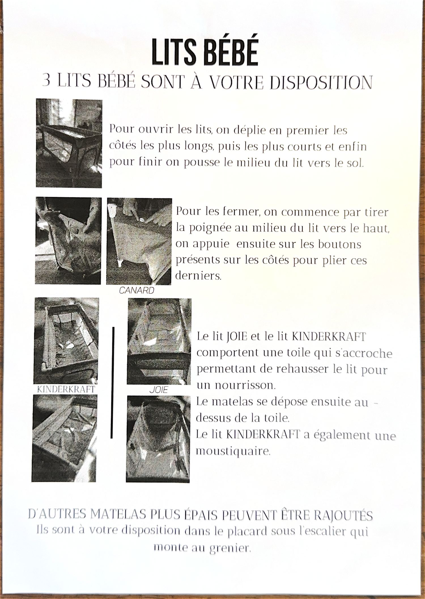

Trois lits bébé sont à votre disposition : un Canard, un Joie et un Kinderkraft.
Ouvrir Déplier un lit
- Dépliez d'abord les côtés les plus longs.
- Dépliez ensuite les côtés les plus courts.
- Pour finir, poussez le milieu du lit vers le sol.
Fermer Replier un lit
- Tirez la poignée au milieu du lit vers le haut.
- Appuyez sur les boutons présents sur les côtés pour les plier.
Nourrisson Rehausser le couchage
- 🧵 Les lits Joie et Kinderkraft comportent une toile qui s'accroche, permettant de rehausser le couchage pour un nourrisson.
- 🛌 Le matelas se dépose au-dessus de la toile.
- 🦟 Le lit Kinderkraft dispose en plus d'une moustiquaire.
Matelas Besoin de plus de confort ?
D'autres matelas plus épais peuvent être ajoutés. Ils sont dans le placard sous l'escalier qui monte au grenier.
📷 Voir la fiche originale avec les photos
